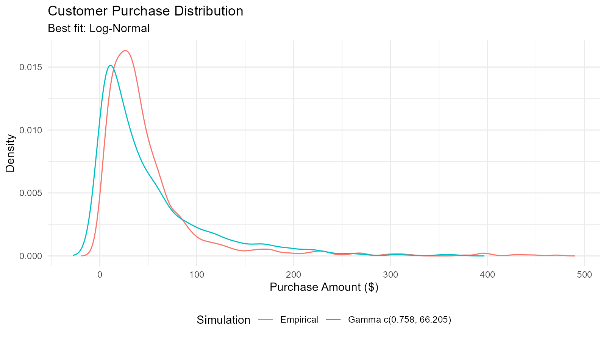
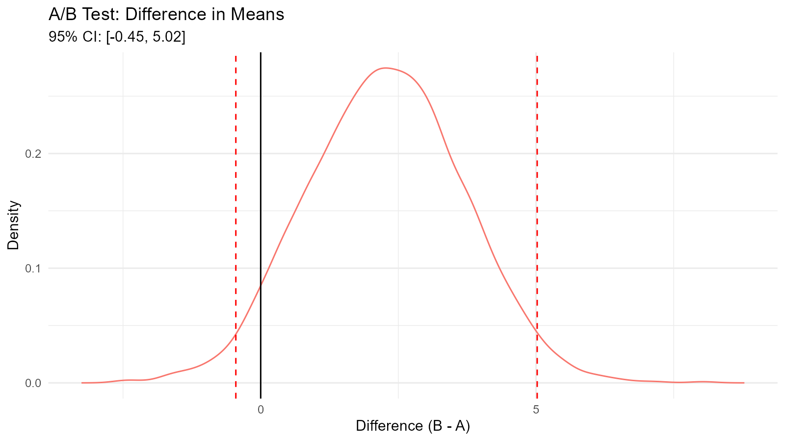
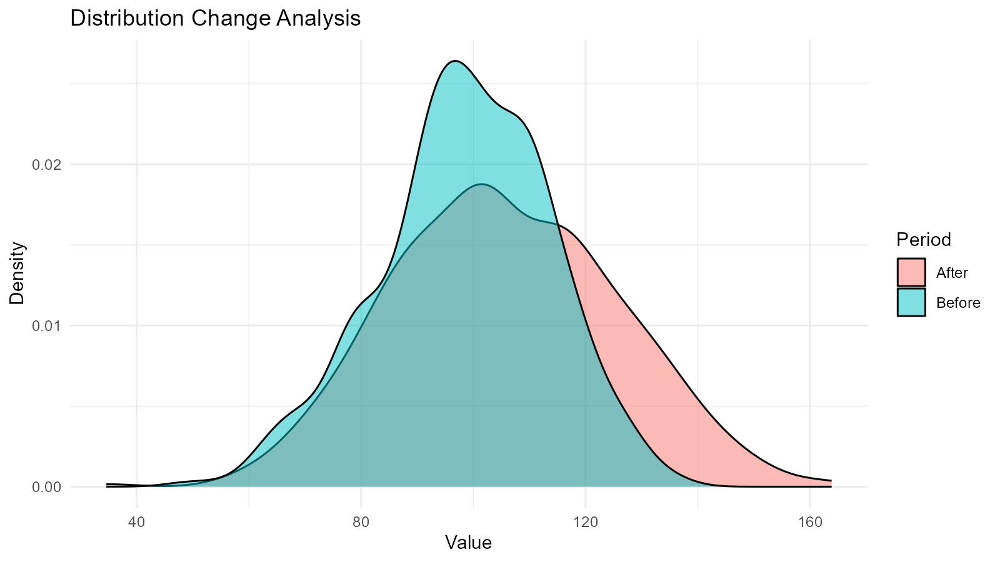
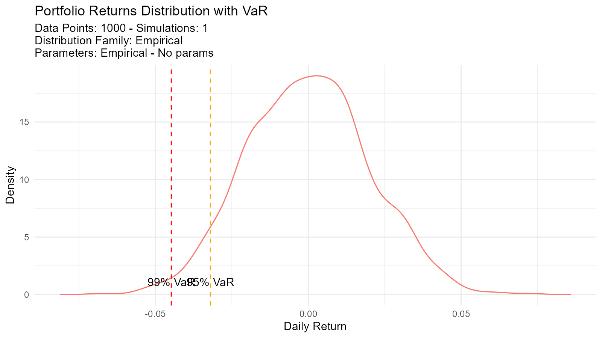
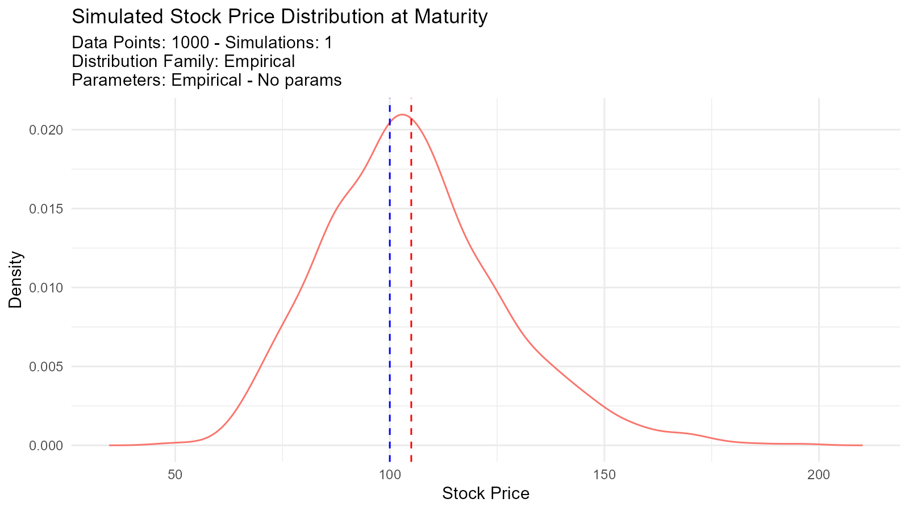
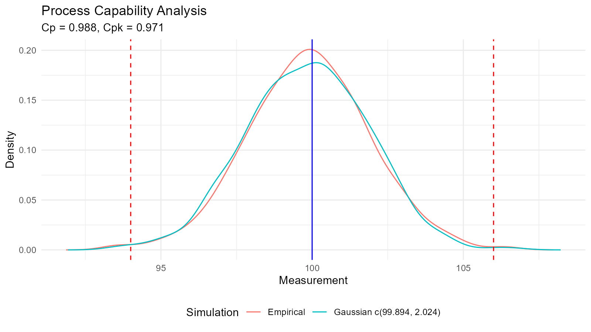
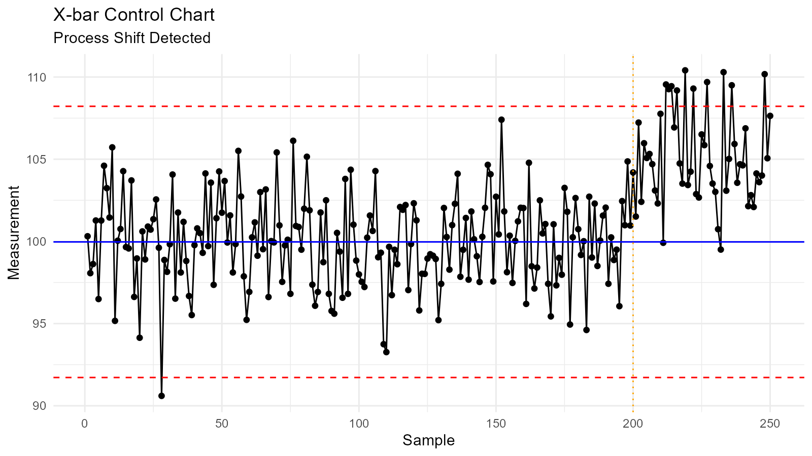
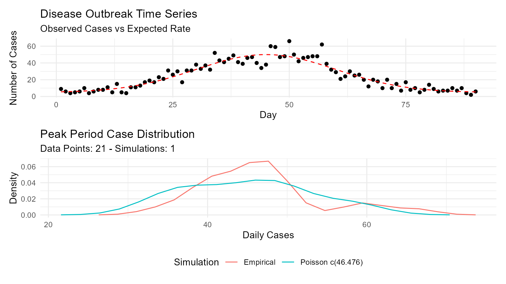
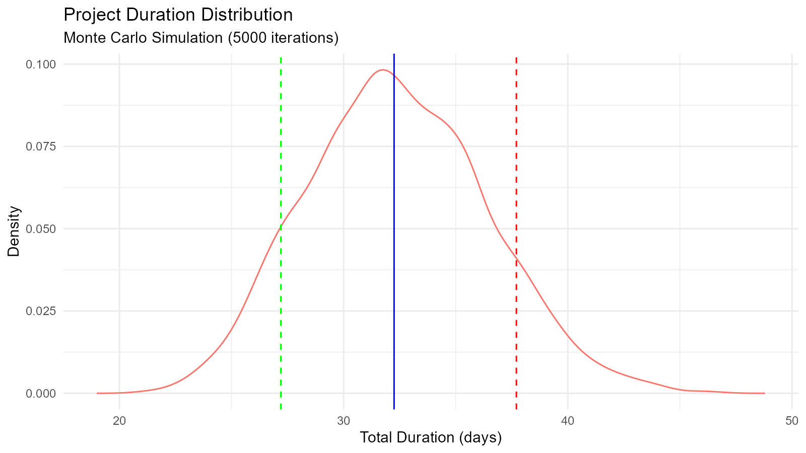
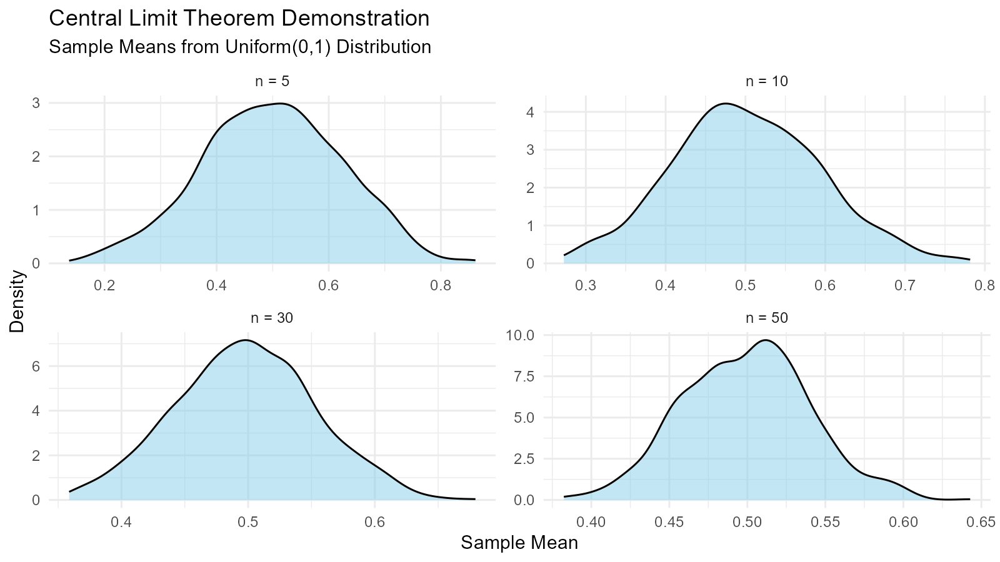

Real-world examples demonstrating TidyDensity in action across various domains and applications.
Data Science and Analytics
Example 1: Exploring Customer Purchase Amounts
# Simulate customer purchase data
purchases <- c(rgamma(800, shape = 2, rate = 0.05), # Regular customers
rexp(200, rate = 0.01)) # Big spenders
# Fit multiple distributions
normal_fit <- util_normal_param_estimate(purchases, .auto_gen_empirical = TRUE)
gamma_fit <- util_gamma_param_estimate(purchases, .auto_gen_empirical = TRUE)
lognormal_fit <- util_lognormal_param_estimate(purchases, .auto_gen_empirical = TRUE)
# Compare using AIC
aic_comparison <- data.frame(
Distribution = c("Normal", "Gamma", "Log-Normal"),
AIC = c(
util_normal_aic(.x = purchases),
util_gamma_aic(.x = purchases),
util_lognormal_aic(.x = purchases)
)
)
# Best distribution
best_dist <- aic_comparison[which.min(aic_comparison$AIC), ]
print(paste("Best fitting distribution:", best_dist$Distribution))
#> [1] "Best fitting distribution: Log-Normal"
# Visualize best fit
gamma_fit$combined_data_tbl |>
tidy_combined_autoplot() +
labs(title = "Customer Purchase Distribution",
subtitle = paste("Best fit:", best_dist$Distribution),
x = "Purchase Amount ($)",
y = "Density")
Example 2: A/B Test Analysis with Bootstrap
# Simulate A/B test data
group_a <- rnorm(100, mean = 50, sd = 10) # Control
group_b <- rnorm(100, mean = 55, sd = 10) # Treatment
# Bootstrap confidence intervals
bootstrap_diff <- function(n_sims = 5000) {
diffs <- numeric(n_sims)
for (i in 1:n_sims) {
boot_a <- sample(group_a, length(group_a), replace = TRUE)
boot_b <- sample(group_b, length(group_b), replace = TRUE)
diffs[i] <- mean(boot_b) - mean(boot_a)
}
return(diffs)
}
# Run bootstrap
diff_distribution <- bootstrap_diff(5000)
# Calculate CI
ci <- quantile(diff_distribution, c(0.025, 0.975))
mean_diff <- mean(diff_distribution)
# Visualize
boot_tbl <- tidy_empirical(.x = diff_distribution, .num_sims = 1)
tidy_autoplot(boot_tbl, .plot_type = "density") +
geom_vline(xintercept = ci[1], linetype = "dashed", color = "red") +
geom_vline(xintercept = ci[2], linetype = "dashed", color = "red") +
geom_vline(xintercept = 0, linetype = "solid", color = "black") +
labs(title = "A/B Test: Difference in Means",
subtitle = sprintf("95%% CI: [%.2f, %.2f]", ci[1], ci[2]),
x = "Difference (B - A)",
y = "Density")
Example 3: Detecting Data Distribution Changes
# Before and after data
before <- rnorm(500, mean = 100, sd = 15)
after <- rnorm(500, mean = 105, sd = 20) # Mean shift and more variance
# Generate distributions
dist_before <- tidy_empirical(.x = before, .num_sims = 1)
dist_after <- tidy_empirical(.x = after, .num_sims = 1)
# Combine for visualization
combined <- bind_rows(
dist_before |> mutate(period = "Before"),
dist_after |> mutate(period = "After")
)
# Plot
ggplot(combined, aes(x = y, fill = period)) +
geom_density(alpha = 0.5) +
labs(title = "Distribution Change Analysis",
x = "Value",
y = "Density",
fill = "Period") +
theme_minimal()
# Statistical comparison
cat("Before: Mean =", round(mean(before), 2), ", SD =", round(sd(before), 2), "\n")
#> Before: Mean = 98.48 , SD = 15.2
cat("After: Mean =", round(mean(after), 2), ", SD =", round(sd(after), 2), "\n")
#> After: Mean = 105.61 , SD = 20.05
# Test for difference
t_test_result <- t.test(after, before)
cat("T-test p-value:", t_test_result$p.value, "\n")
#> T-test p-value: 3.793033e-10Statistical Analysis
Example 4: Power Analysis for Sample Size Determination
# Simulate power analysis
effect_sizes <- seq(0.2, 1.0, by = 0.1)
sample_sizes <- seq(30, 200, by = 10)
power_results <- expand.grid(effect_size = effect_sizes,
sample_size = sample_sizes)
# Calculate power for each combination
calculate_power <- function(n, effect) {
simulations <- 1000
significant <- 0
for (i in 1:simulations) {
group1 <- rnorm(n, mean = 0, sd = 1)
group2 <- rnorm(n, mean = effect, sd = 1)
p_value <- t.test(group1, group2)$p.value
if (p_value < 0.05) significant <- significant + 1
}
return(significant / simulations)
}
# Run for a few key combinations (subset for speed)
key_combos <- power_results[c(1, 50, 100, 150), ] |> na.omit()
key_combos$power <- mapply(calculate_power,
key_combos$sample_size,
key_combos$effect_size)
print(key_combos)
#> effect_size sample_size power
#> 1 0.2 30 0.119
#> 50 0.6 80 0.968
#> 100 0.2 140 0.389
#> 150 0.7 190 1.000Example 5: Distribution Goodness-of-Fit Testing
# Generate data (actually from gamma, but test multiple)
test_data <- rgamma(200, shape = 3, rate = 0.5)
# Fit multiple distributions and test
distributions <- list(
"Normal" = function(x) util_normal_param_estimate(x, .auto_gen_empirical = FALSE),
"Gamma" = function(x) util_gamma_param_estimate(x, .auto_gen_empirical = FALSE),
"Weibull" = function(x) util_weibull_param_estimate(x, .auto_gen_empirical = FALSE),
"Log-Normal" = function(x) util_lognormal_param_estimate(x, .auto_gen_empirical = FALSE)
)
# Calculate AIC for each
aic_results <- c(
"Normal" = util_normal_aic(.x = test_data),
"Gamma" = util_gamma_aic(.x = test_data),
"Weibull" = util_weibull_aic(.x = test_data),
"Log-Normal" = util_lognormal_aic(.x = test_data)
)
# Results
results_df <- data.frame(
Distribution = names(aic_results),
AIC = aic_results,
Delta_AIC = aic_results - min(aic_results)
) |>
arrange(AIC)
print(results_df)
#> Distribution AIC Delta_AIC
#> Gamma Gamma 1009.000 0.000000
#> Log-Normal Log-Normal 1013.549 4.549198
#> Weibull Weibull 1023.253 14.253167
#> Normal Normal 1082.418 73.417824
cat("\nBest fitting distribution:", results_df$Distribution[1], "\n")
#>
#> Best fitting distribution: GammaFinance and Risk Management
Example 6: Value at Risk (VaR) Calculation
# Simulate daily returns
returns <- rnorm(1000, mean = 0.001, sd = 0.02) # 0.1% daily return, 2% volatility
# Create distribution
returns_dist <- tidy_empirical(.x = returns, .num_sims = 1)
# Calculate VaR at different confidence levels
var_95 <- quantile(returns, 0.05)
var_99 <- quantile(returns, 0.01)
var_995 <- quantile(returns, 0.005)
# Bootstrap for VaR confidence intervals
boot_returns <- tidy_bootstrap(.x = returns, .num_sims = 2000)
boot_var <- boot_returns |>
bootstrap_unnest_tbl() |>
group_by(sim_number) |>
summarise(var_95 = quantile(y, 0.05)) |>
ungroup()
var_ci <- quantile(boot_var$var_95, c(0.025, 0.975))
# Results
cat("Value at Risk (VaR) Analysis\n")
#> Value at Risk (VaR) Analysis
cat("95% VaR:", round(var_95 * 100, 3), "%\n")
#> 95% VaR: -3.199 %
cat("99% VaR:", round(var_99 * 100, 3), "%\n")
#> 99% VaR: -4.479 %
cat("99.5% VaR:", round(var_995 * 100, 3), "%\n")
#> 99.5% VaR: -5.064 %
cat("\n95% CI for 95% VaR: [", round(var_ci[1] * 100, 3), "%,",
round(var_ci[2] * 100, 3), "%]\n")
#>
#> 95% CI for 95% VaR: [ -3.386 %, -2.958 %]
# Visualize
tidy_autoplot(returns_dist, .plot_type = "density") +
geom_vline(xintercept = var_95, color = "orange", linetype = "dashed") +
geom_vline(xintercept = var_99, color = "red", linetype = "dashed") +
annotate("text", x = var_95, y = 0, label = "95% VaR", vjust = -1) +
annotate("text", x = var_99, y = 0, label = "99% VaR", vjust = -1) +
labs(title = "Portfolio Returns Distribution with VaR",
x = "Daily Return",
y = "Density")
Example 7: Option Pricing with Monte Carlo Simulation
# Simulate stock price paths using GBM
stock_price_simulation <- function(S0, mu, sigma, T, n_steps, n_sims) {
dt <- T / n_steps
paths <- matrix(0, nrow = n_steps + 1, ncol = n_sims)
paths[1, ] <- S0
for (i in 2:(n_steps + 1)) {
Z <- rnorm(n_sims)
paths[i, ] <- paths[i-1, ] * exp((mu - 0.5 * sigma^2) * dt + sigma * sqrt(dt) * Z)
}
return(paths)
}
# Parameters
S0 <- 100 # Initial stock price
K <- 105 # Strike price
mu <- 0.05 # Drift
sigma <- 0.2 # Volatility
T <- 1 # Time to maturity (1 year)
n_steps <- 252 # Daily steps
n_sims <- 1000
# Simulate
paths <- stock_price_simulation(S0, mu, sigma, T, n_steps, n_sims)
# Final prices
final_prices <- paths[nrow(paths), ]
# Option payoffs
call_payoffs <- pmax(final_prices - K, 0)
put_payoffs <- pmax(K - final_prices, 0)
# Expected values (discounted)
r <- 0.03 # Risk-free rate
call_price <- mean(call_payoffs) * exp(-r * T)
put_price <- mean(put_payoffs) * exp(-r * T)
cat("Call Option Price:", round(call_price, 2), "\n")
#> Call Option Price: 8.12
cat("Put Option Price:", round(put_price, 2), "\n")
#> Put Option Price: 7.74
# Visualize final price distribution
final_dist <- tidy_empirical(.x = final_prices, .num_sims = 1)
tidy_autoplot(final_dist, .plot_type = "density") +
geom_vline(xintercept = K, color = "red", linetype = "dashed") +
geom_vline(xintercept = S0, color = "blue", linetype = "dashed") +
labs(title = "Simulated Stock Price Distribution at Maturity",
x = "Stock Price",
y = "Density")
Quality Control and Manufacturing
Example 8: Process Capability Analysis
# Manufacturing process data
measurements <- rnorm(500, mean = 100, sd = 2) # Target = 100
LSL <- 94 # Lower specification limit
USL <- 106 # Upper specification limit
# Fit distribution
fit <- util_normal_param_estimate(measurements, .auto_gen_empirical = TRUE)
mean_est <- fit$parameter_tbl$mu[1]
sd_est <- fit$parameter_tbl$stan_dev[1]
# Calculate Cp and Cpk
Cp <- (USL - LSL) / (6 * sd_est)
Cpu <- (USL - mean_est) / (3 * sd_est)
Cpl <- (mean_est - LSL) / (3 * sd_est)
Cpk <- min(Cpu, Cpl)
# Defect rate
defect_rate <- (pnorm(LSL, mean_est, sd_est) +
(1 - pnorm(USL, mean_est, sd_est))) * 100
# Results
cat("Process Capability Analysis\n")
#> Process Capability Analysis
cat("Cp:", round(Cp, 3), "\n")
#> Cp: 0.988
cat("Cpk:", round(Cpk, 3), "\n")
#> Cpk: 0.971
cat("Estimated Defect Rate:", round(defect_rate, 4), "%\n")
#> Estimated Defect Rate: 0.307 %
# Interpretation
if (Cpk >= 1.33) {
cat("Process capability: GOOD\n")
} else if (Cpk >= 1.0) {
cat("Process capability: ADEQUATE\n")
} else {
cat("Process capability: POOR - Action required\n")
}
#> Process capability: POOR - Action required
# Visualize
fit$combined_data_tbl |>
tidy_combined_autoplot() +
geom_vline(xintercept = LSL, color = "red", linetype = "dashed") +
geom_vline(xintercept = USL, color = "red", linetype = "dashed") +
geom_vline(xintercept = 100, color = "blue", linetype = "solid") +
labs(title = "Process Capability Analysis",
subtitle = sprintf("Cp = %.3f, Cpk = %.3f", Cp, Cpk),
x = "Measurement",
y = "Density")
Example 9: Control Chart Analysis
# Generate process data with a shift
n_before <- 200
n_after <- 50
before_shift <- rnorm(n_before, mean = 100, sd = 3)
after_shift <- rnorm(n_after, mean = 105, sd = 3) # Process shifted
all_data <- c(before_shift, after_shift)
time <- 1:length(all_data)
# Calculate control limits
mean_val <- mean(before_shift)
sd_val <- sd(before_shift)
UCL <- mean_val + 3 * sd_val
LCL <- mean_val - 3 * sd_val
# Create control chart
control_data <- data.frame(time = time, value = all_data)
ggplot(control_data, aes(x = time, y = value)) +
geom_line() +
geom_point() +
geom_hline(yintercept = mean_val, color = "blue") +
geom_hline(yintercept = UCL, color = "red", linetype = "dashed") +
geom_hline(yintercept = LCL, color = "red", linetype = "dashed") +
geom_vline(xintercept = n_before, color = "orange", linetype = "dotted") +
labs(title = "X-bar Control Chart",
subtitle = "Process Shift Detected",
x = "Sample",
y = "Measurement") +
theme_minimal()
Healthcare and Epidemiology
Example 10: Disease Outbreak Modeling
# Model daily case counts with Poisson distribution
days <- 1:90
baseline_rate <- 5
peak_rate <- 50
# Simulate outbreak with time-varying rate
lambda <- baseline_rate + (peak_rate - baseline_rate) *
exp(-((days - 45)^2) / (2 * 15^2)) # Gaussian curve
cases <- rpois(length(days), lambda)
# Fit Poisson distribution to peak period
peak_cases <- cases[35:55]
poisson_fit <- util_poisson_param_estimate(peak_cases, .auto_gen_empirical = TRUE)
# Visualize time series
outbreak_data <- data.frame(day = days, cases = cases, expected = lambda)
p1 <- ggplot(outbreak_data, aes(x = day, y = cases)) +
geom_point() +
geom_line(aes(y = expected), color = "red", linetype = "dashed") +
labs(title = "Disease Outbreak Time Series",
subtitle = "Observed Cases vs Expected Rate",
x = "Day",
y = "Number of Cases") +
theme_minimal()
# Peak analysis
p2 <- poisson_fit$combined_data_tbl |>
tidy_combined_autoplot() +
labs(title = "Peak Period Case Distribution",
x = "Daily Cases",
y = "Density")
p1 / p2
Machine Learning and Simulation
Example 11: Monte Carlo Simulation for Project Planning
# Project task duration simulation using triangular distribution
tasks <- list(
task1 = list(min = 5, mode = 8, max = 15),
task2 = list(min = 3, mode = 5, max = 10),
task3 = list(min = 7, mode = 10, max = 20),
task4 = list(min = 2, mode = 4, max = 8)
)
# Simulate total project duration
n_sims <- 5000
total_durations <- numeric(n_sims)
for (i in 1:n_sims) {
task_durations <- sapply(tasks, function(task) {
tidy_triangular(.n = 2, .min = task$min, .max = task$max, .mode = task$mode)$y[1]
})
total_durations[i] <- sum(task_durations)
}
# Analyze results
duration_dist <- tidy_empirical(.x = total_durations, .num_sims = 1)
percentiles <- quantile(total_durations, c(0.1, 0.5, 0.9))
cat("Project Duration Analysis\n")
#> Project Duration Analysis
cat("10th percentile (optimistic):", round(percentiles[1], 1), "days\n")
#> 10th percentile (optimistic): 27.2 days
cat("50th percentile (median):", round(percentiles[2], 1), "days\n")
#> 50th percentile (median): 32.3 days
cat("90th percentile (pessimistic):", round(percentiles[3], 1), "days\n")
#> 90th percentile (pessimistic): 37.7 days
# Visualize
tidy_autoplot(duration_dist, .plot_type = "density") +
geom_vline(xintercept = percentiles[1], color = "green", linetype = "dashed") +
geom_vline(xintercept = percentiles[2], color = "blue", linetype = "solid") +
geom_vline(xintercept = percentiles[3], color = "red", linetype = "dashed") +
labs(title = "Project Duration Distribution",
subtitle = "Monte Carlo Simulation (5000 iterations)",
x = "Total Duration (days)",
y = "Density")
Education and Teaching
Example 12: Demonstrating Central Limit Theorem
# Show CLT with different source distributions
n_samples <- 1000
sample_sizes <- c(5, 10, 30, 50)
demonstrate_clt <- function(source_dist_func, sample_size, n_samples) {
sample_means <- numeric(n_samples)
for (i in 1:n_samples) {
sample <- source_dist_func(sample_size)
sample_means[i] <- mean(sample)
}
return(sample_means)
}
# Source: Uniform distribution
uniform_source <- function(n) runif(n, 0, 1)
# Generate for different sample sizes
results <- lapply(sample_sizes, function(n) {
means <- demonstrate_clt(uniform_source, n, n_samples)
tidy_empirical(.x = means, .num_sims = 1) |>
mutate(sample_size = n)
})
# Combine and plot
combined <- bind_rows(results)
ggplot(combined, aes(x = y)) +
geom_density(fill = "skyblue", alpha = 0.5) +
facet_wrap(~sample_size, scales = "free",
labeller = labeller(sample_size = function(x) paste("n =", x))) +
labs(title = "Central Limit Theorem Demonstration",
subtitle = "Sample Means from Uniform(0,1) Distribution",
x = "Sample Mean",
y = "Density") +
theme_minimal()
Tips for Your Own Use Cases
1. Start with Exploration
# Explore your data
summary(your_data)
hist(your_data)
# Try empirical distribution
emp <- tidy_empirical(.x = your_data, .num_sims = 1)
tidy_autoplot(emp, .plot_type = "density")3. Validate with Visualization
# Always visualize
fit <- get(paste0("util_", best, "_param_estimate"))(
your_data,
.auto_gen_empirical = TRUE
)
fit$combined_data_tbl |>
tidy_combined_autoplot()4. Use Bootstrap for Uncertainty
# Add bootstrap confidence intervals
boot <- tidy_bootstrap(.x = your_data, .num_sims = 2000)
boot |>
bootstrap_unnest_tbl() |>
summarise(
lower = quantile(y, 0.025),
upper = quantile(y, 0.975)
)Key Takeaways
1. Distribution Fitting is Essential
Use AIC to compare multiple candidate distributions and select the best fit for your data.
2. Bootstrap Provides Robust Uncertainty
When parametric assumptions are uncertain, bootstrap resampling gives reliable confidence intervals.
3. Visualization Validates Analysis
Always plot your results to verify that fitted distributions match the empirical data.